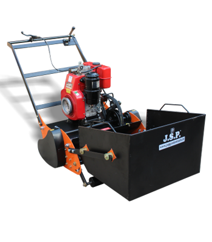

CRAFTED FOR THE GREAT OUTDOORS
A little care.
A greener
everywhere.
From your first garden to your next big landscape.
Find the right lawn mower and tools with J.S.P.
Made for the work. Inspired by the garden.Lawn mowers · Cutting tools · Garden essentials
J.S.P GARDEN TOOLS — LUDHIANA, INDIAEST.
1990
1990

MEET THE 0059 SERIESPower your next green space.Diesel engine lawn mower
A TOOL FOR EVERY TASK
Good gardens start here.
FROM THE J.S.P COLLECTION
Meet your garden’s toolkit.
A few good tools. Plenty of possibilities.

A shared love for things that grow.
THE ROOTS OF J.S.P
From Ludhiana.
For greener spaces.
J.S.P Lawn Mowers & Garden Tools began in 1990 with the backing of the late S. Jagdish Singh Passi. Today, the range brings together lawn mowers, garden hand tools and accessories.
Whether you’re comparing a mower or choosing a pruning tool, start with the right conversation.
Discover our storyLET’S GET GROWING